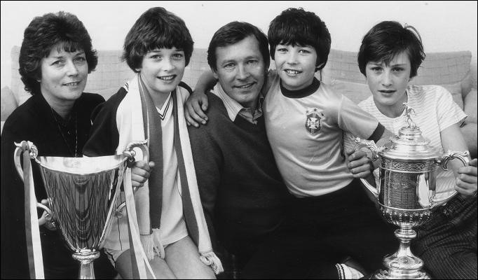

Chương 8

Falkirk, Alex gặp lại nhiều gương mặt quen thuộc: George Miller, đồng đội ở Dunfermline, Andy Roxburgh, đồng đội ở Queen’s Park, Craig Watson, đồng đội từ thời…trung học Govan, và dĩ nhiên, ông thầy cũ Willie Cunningham.Quan hệ giữa Alex và Cunningham vẫn sóng gió như xưa. Họ thường xuyên cãi nhau, thậm chí có lần suýt lao vào đánh lộn, nhưng cãi xong rồi thì lại quý mến nhau như không chuyện gì xảy ra.
Mọi người đều ngạc nhiên, không hiểu vì sao sau bảy tháng bị cách ly khỏi đội một Rangers, Alex vẫn duy trì được thể lực tốt.Họ không biết rằng dù ở đội hai, hay đội trẻ, anh vẫn tập luyện hăng say không kém khi chơi trên đội một. Alex cùng Andy Roxburgh (sau này là HLV tuyển Scotland, rồi chuyên gia cao cấp của UEFA) tạo thành cặp “song sát”, cùng nhau khủng bố hàng phòng ngự đối phương. Mùa đó, Falkirk giành chức vô địch giải hạng nhì, riêng Alex có 18 lần lập công.
Phấn khởi trước thành tích thăng hạng, ban lãnh đạo Falkirk đưa ra khung tiền thưởng vô cùng rộng rãi cho mùa giải 1970-1971: Thắng một trận được thưởng, hòa cũng được thưởng, và cứ mỗi tuần trụ được trong Top 10 thì mỗi cầu thủ được thêm 40 bảng. Có lẽ nhờ liều “doping” tiền thưởng ấy, Falkirk kết thúc mùa giải ở vị trí thứ bảy.Ferguson lần này chỉ ghi được 14 bàn (trong 28 trận), nhưng vẫn đủ để dẫn đầu danh sách phá lưới tại CLB.
Tuy nhiên, mỗi khi nhớ lại năm 1971, Alex không quên được thảm họa Ibrox. Ngày hai tháng một năm đó, tận dụng cơ hội trận Falkirk-Airdrie bị hoãn, anh cùng Andy Roxburgh và Tom Young đến Ibrox theo dõi derby Celtic-Rangers. Gần cả trận trôi qua, không bàn thắng nào được ghi. Đến phút 87, Jimmy Johnstone đưa Celtic vượt lên dẫn trước, nhưng Colin Stein ngay lập tức quân bình tỷ số cho đội chủ nhà. Sau bàn thắng của Stein, cho rằng tình thế đã an bài, Alex và đồng đội ra về, không đợi trọng tài nổi còi kết thúc trận đấu.
Chở Roxburgh và Young về đến nhà xong, Alex lái xe quay lại nhà bố mẹ ở đường Govan. Khi đi ngang bệnh viện, anh nhận thấy xe cứu thương đang xếp hàng dài. “Chắc các fan lại đánh nhau đây”, anh thầm nghĩ.Khi ông Alex bố ra mở cửa, mặt ông trắng bệch.Cathy cũng đang ở đấy, cả nhà đang túm tụm xem tin tức trên TV. Thì ra sau khi trận đấu kết thúc, người hâm mộ chen lấn, dẫm đạp lên nhau. Tổn thất thật kinh khủng: 66 người thiệt mạng, hơn 200 bị thương! Điều đáng lo nhất là Martin Ferguson cũng có mặt theo dõi trận này, thậm chí ngồi đúng ở khu khán đài nơi xảy ra tai nạn.
Lòng bồn chồn như lửa đốt, Alex dẫn cha đi khắp các quán rượu gần đó để tìm em. Không! Martin không đến quán nào cả. Hai người lại chạy đến đồn cảnh sát. Viên cảnh sát trực gợi ý nên thử đến Ibrox, nơi người ta đang quàn các tử thi. Đúng lúc mọi người quýnh quáng rối tung lên thì xe của…Martin chạy về đến nơi. Martin mở cửa bước ra, đứng ngẩn người, không hiểu vì sao gia đình mình lại lăng xăng như sắp sửa chạy giặc. Hóa ra anh chàng đã điên tiết bỏ về ngay sau khi Johnstone mở tỷ số cho Celtic, và không hề biết gì về thảm họa đã xảy ra…
Trở lại với Alex, những năm đầu thập niên 1970 trôi qua khá yên ả. Rời Rangers rõ ràng là một bước lùi, nhưng anh vẫn giữ được phong độ khá tốt, thường xuyên ghi bàn cho Falkirk. Năm 1970, anh được bầu làm chủ tịch Hội Cầu Thủ Nhà Nghề Scotland (SPFA), và giữ chức vụ này trong ba năm.Alex và Cunningham thì…vẫn thế, thỉnh thoảng lại “ủng oẳng” nhau. Năm 1972, sau trận thua tơi tả 1-6 trước St Johnstone, Cunningham nổi giận, cắt hết phụ cấp của cầu thủ: “Từ nay mỗi lần đi tập thì tự trả tiền xe, ăn trưa cũng tự móc tiền ra trả, CLB không chi nữa!” Cầu thủ phản đối bằng cách đình công. Hai bên găng nhau cho đến khi ban lãnh đạo can thiệp, buộc Cunningham phải nhượng bộ, chi phụ cấp trở lại.Cầm đầu đình công dĩ nhiên là…Alex Ferguson.Nhưng như đã nói, Cunningham không bao giờ hằn thù Alex; chỉ ít lâu sau, ông bổ nhiệm anh vào vị trí cầu thủ kiêm trợ lý HLV.
Cùng năm 1972, cặp song sinh Jason và Darren Ferguson chào đời. Vì song thai, nên khi sinh hết sức khó khăn. Khi Cathy vượt cạn, Alex đứng kề bên, nắm chặt tay tiếp sức cho vợ. Nhìn khuôn mặt vợ tím tái vì những cơn co thắt, anh đau lòng đến ngất xỉu. Đến lúc Alex tỉnh lại, hai cậu con trai đã chào đời. Jason khá khỏe khắn, còn Darren thì bé xíu, phải nằm trong phòng chăm sóc đặc biệt một thời gian.
Sang năm 1973, mọi chuyện bắt đầu xấu đi. Trận gặp Aberdeen ở Cúp QG, Alex bị đuổi do đá nguội Willie Young, trong một tình huống tương tự như vụ Beckham-Simeone tại World Cup 1998. Trong sự nghiệp cầu thủ, Alex bị đuổi tổng cộng sáu lần, lần này là lần cuối cùng và nghiêm trọng nhất, nghiêm trọng bởi anh nay đã là thành viên ban huấn luyện. Cầu thủ bình thường đi đá nguội đối phương đã đáng phạt, cầu thủ kiêm trợ lý lại càng đáng phạt hơn, nên rốt cuộc, anh bị Liên Đoàn treo giò 53 ngày, tức gần tám tuần.Ngoài việc bị treo giò, anh còn chấn thương đầu gối nghiêm trọng, phải nghỉ dài hạn, nên chỉ ghi được một bàn trong cả mùa giải. Số phận Willie Cunningham cũng chẳng tươi sáng gì hơn. Sau mùa giải 1972-1973, ông bị sa thải, tuy đã giúp CLB trụ hạng thành công. Alex nhận trách nhiệm quyền HLV trưởng, cho đến khi ban lãnh đạo Falkirk bổ nhiệm John Prentice.
Việc làm đầu tiên của tân HLV John Prentice là giáng chức Alex Ferguson xuống làm một cầu thủ bình thường.Cá tính của Alex đương nhiên không cho phép anh chấp nhận điều đó.Khi người ta đã là trợ lý, rồi quyền HLV trưởng, thì không ai lại hài lòng với việc trở lại làm một anh lính trơn. Prentice đồng ý để Alex được chuyển nhượng tự do, và anh ký hợp đồng hai năm với Ayr United.
Ở thời điểm 1973, Ayr United mạnh hơn Falkirk.Mùa 1972-1973, khi Falkirk phải “trầy vi tróc vẩy” mới trụ lại nổi hạng nhất, Ayr đứng vị trí thứ sáu.HLV Ayr, Ally MacLeod là người nổi tiếng về tài “quăng bom”. Trong buổi ký hợp đồng với Alex, ông lôi trong túi ra lịch thi đấu mùa bóng mới, và lên kế hoạch:
-Trận đầu tiên: Gặp Dumbarton ở Boghead, không vấn đề gì, hai điểm bỏ túi. Bọn nó mới vừa lên hạng, chưa có kinh nghiệm mà. Trận thứ hai: Gặp Clyde trên sân nhà Somerset. Mình luôn thắng trận đầu tiên trên sân nhà, vả lại thằng gôn mập McVeigh của bọn Clyde có biết bắt bóng đâu, lại hai điểm.Thế nhé, sáu trận đầu ta sẽ toàn thắng dễ dàng. Trận thứ bảy gặp Rangers: ta có lợi thế sân nhà, và đang dẫn đầu bảng với tinh thần rất cao, nên Rangers cũng sẽ phải thua! Trận kế gặp Celtic ở Celtic Park: Cũng hai điểm luôn!
Cũng với tinh thần “lạc quan” ấy, khi làm HLV ĐTQG, MacLeod tuyên bố Scotland sẽ vô địch World Cup 1978! Kết quả là các chàng trai Tô Cách Lan xách giỏ ra về ngay sau vòng một.
Tại Somerset, Alex Ferguson trở lại là cầu thủ bán chuyên. Anh mở quán rượu ở Govan, lấy tên là Fergie’s. Cầu thủ mở quán ăn, nhà hàng không phải chuyện gì lạ, nhưng thường thì họ chỉ bỏ vốn và thuê người khác đứng ra điều hành, chỉ riêng Alex tự quản lý quán từ A đến Z. Không những quản lý mà thôi, nhiều khi còn đích thân pha rượu, đích thân nấu ăn phục vụ khách nữa. Và anh làm tất cả những điều đó khi vẫn đang chơi bóng cho Ayr United! Công việc càng bận rộn hơn khi anh hùn vốn cùng một người bạn mở quán rượu thứ hai vào năm 1975: Quán Shaw’s. Thậm chí, Alex còn dự tính mở một nhà hàng, nhưng có lẽ vì…sức người có hạn, dự định cuối cùng phải hủy bỏ.
Do chấn thương không lành hẳn, trong mùa duy nhất khoác áo Ayr, Alex thường chỉ vào sân từ ghế dự bị. Tuy vậy, theo như hồi ký (2000), anh vẫn đóng góp 14 bàn (Theo Crick (2003), số bàn thắng chỉ là 10). Vào cuối mùa, Alex được bác sỹ cho biết động mạch của anh đang nở lớn, và khuyên anh nên về hưu sớm, để tránh nguy hiểm về sau.
Tháng hai năm 1974, Alex Ferguson ghi bàn thắng cuối cùng trong đời cầu thủ, giúp Ayr cầm hòa St Johnstone 1-1.Tháng tư, anh giã từ sân cỏ ở tuổi 32. Tổng cộng, trong 16 năm, anh chơi 432 trận chính thức, ghi 222 bàn, tức cứ trung bình hai trận lại lập công một lần.
Chương cũ kết thúc, chương mới mở ra! Kết thúc sự nghiệp một cầu thủ bình thường, mở ra sự nghiệp một HLV vĩ đại!

Alex Ferguson cùng vợ và các con (ảnh: sgforums.com)